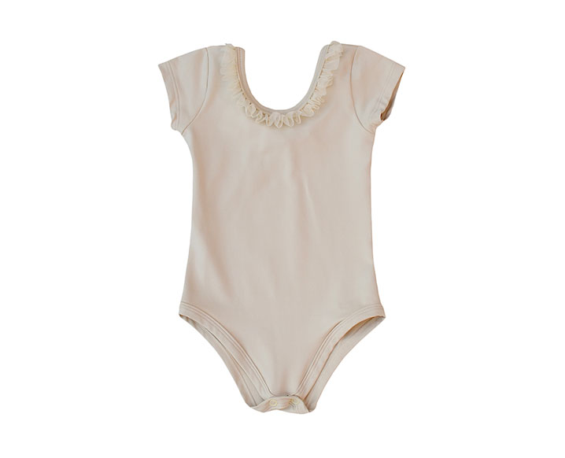

O curso de Ballet Clássico é dividido em três níveis: Iniciante, Intermediário e Avançado.
No Ballet Clássico (a partir dos 7 anos de idade) a técnica é mais vivenciada pelos bailarinos e bailarinas. O ensino prático e teórico perde o caráter lúdico e passa a desenvolver a técnica da dança clássica através de exercícios na barra, centro e diagonal, respeitando cada faixa etária e o físico da criança em formação.
A partir do nível Intermediário a dificuldade dos exercícios aumenta gradativamente. Nesta fase inicia-se o preparo para o trabalho sobre as sapatilhas de ponta. A idade não é o fator determinante para o inicio deste trabalho, é necessário levar em conta a experiência, a qualidade técnica, o preparo físico, o desenvolvimento e consciência corporal de cada bailarina.
UNIFORME: Collant  e shorts preto,meia-calça,
sapatilha,
rede
e faixa para o cabelo: rosa.